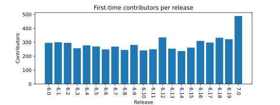

Development statistics for the 7.0 kernel
As a reminder: LWN subscribers can find much of the information below — and more — at any time in the LWN kernel source database.
The 7.0 development cycle saw the addition of 14,251 non-merge commits, a fairly typical number. A bit less typical is that those contributions came from 2,362 developers, greatly exceeding the previous record (2,134) set with 6.19. A surprising 489 of those developers made their first contribution to the kernel in this cycle. The most active developers were:
Most active 7.0 developers
By changesets Krzysztof Kozlowski 191 1.3% Ian Rogers 133 0.9% Christoph Hellwig 126 0.9% Eric Dumazet 108 0.8% Andy Shevchenko 103 0.7% Jani Nikula 102 0.7% Rafael J. Wysocki 96 0.7% Lijo Lazar 92 0.6% Eric Biggers 90 0.6% Thomas Weißschuh 88 0.6% Rob Herring 86 0.6% Uwe Kleine-König 84 0.6% Sean Christopherson 81 0.6% Thorsten Blum 77 0.5% Filipe Manana 74 0.5% Al Viro 68 0.5% Jakub Kicinski 67 0.5% Alice Ryhl 67 0.5% Randy Dunlap 63 0.4% Dmitry Baryshkov 62 0.4%
By changed lines Hawking Zhang 68106 8.4% Kees Cook 22257 2.7% Vikas Gupta 19074 2.3% Ethan Nelson-Moore 17685 2.2% Linus Torvalds 15884 1.9% Taniya Das 14182 1.7% Likun Gao 14151 1.7% Alex Deucher 12744 1.6% Eric Biggers 11657 1.4% David Howells 11341 1.4% Claudio Imbrenda 10514 1.3% Pavankumar Nandeshwar 9631 1.2% Ian Rogers 7967 1.0% Vladimir Zapolskiy 7734 0.9% Detlev Casanova 6508 0.8% Lijo Lazar 5777 0.7% Rob Herring 5670 0.7% Harsh Kumar Bijlani 5027 0.6% Dmitry Baryshkov 4909 0.6% Pratik Vishwakarma 4644 0.6%
Krzysztof Kozlowski made the top of the by-changesets column once again with extensive work throughout the system-on-chip and devicetree subsystems. Ian Rogers made a lot of changes to the perf tool. Christoph Hellwig continues with a long series of refactoring work, primarily in the NFS and XFS filesystems. Eric Dumazet contributed improvements throughout the networking subsystem, and Andy Shevchenko did refactoring work in a number of driver subsystems.
In the lines-changed column, the amdgpu graphics driver was, once again, responsible for the top entry; the changes this time were contributed by Hawking Zhang. Kees Cook added a new kmalloc() API, changing thousands of callers in the process. Vikas Gupta contributed two (large) patches to the Broadcom BNGE Ethernet driver. Ethan Nelson-Moore removed the unloved RoadRunner HIPPI driver, and Torvalds made a rare appearance on this list by virtue of changes to Cook's kmalloc() interface.
There were Tested-by tags attached to 9.4% of the commits in 7.0, and Reviewed-by tags on 54%. The top testers and reviewers were:
Test and review credits in 7.0
Tested-by Dan Wheeler 151 10.1% Xudong Hao 36 2.4% Fuad Tabba 34 2.3% Mehdi Djait 31 2.1% Manali Shukla 30 2.0% Arnaldo Carvalho de Melo 27 1.8% Thomas Falcon 26 1.7% Andreas Korb 24 1.6% Valentin Haudiquet 24 1.6% Wolfram Sang 22 1.5% Leo Yan 19 1.3% Venkat Rao Bagalkote 19 1.3% Lad Prabhakar 18 1.2% Samuel Salin 16 1.1%
Reviewed-by Dmitry Baryshkov 197 1.9% Konrad Dybcio 191 1.9% Frank Li 177 1.7% Simon Horman 165 1.6% Krzysztof Kozlowski 155 1.5% David Sterba 149 1.5% Geert Uytterhoeven 141 1.4% Andy Shevchenko 131 1.3% Rob Herring 124 1.2% Vasanthakumar Thiagarajan 124 1.2% Baochen Qiang 121 1.2% Christoph Hellwig 120 1.2% Jonathan Cameron 117 1.1% Ilpo Järvinen 113 1.1%
These lists have returned to a more normal form this time around, without Charles Keepax's blowout 310-review performance seen in 6.19.
The development of the 7.0 kernel was supported by 225 employers that we know of; the most active employers were:
Most active 7.0 employers
By changesets (Unknown) 1666 11.7% Intel 1540 10.8% 1075 7.5% AMD 943 6.6% Red Hat 922 6.5% Qualcomm 795 5.6% (None) 598 4.2% Meta 424 3.0% SUSE 362 2.5% Oracle 296 2.1% Huawei Technologies 291 2.0% (Consultant) 276 1.9% NVIDIA 268 1.9% Renesas Electronics 258 1.8% IBM 256 1.8% Linaro 245 1.7% NXP Semiconductors 238 1.7% Collabora 226 1.6% Arm 223 1.6% Bootlin 144 1.0%
By lines changed AMD 139764 17.2% Qualcomm 73226 9.0% (Unknown) 70208 8.6% 68169 8.4% Intel 50468 6.2% Red Hat 40147 4.9% Broadcom 24765 3.0% (None) 23184 2.8% Meta 20655 2.5% IBM 18792 2.3% Oracle 17101 2.1% Linux Foundation 17084 2.1% NXP Semiconductors 15380 1.9% Collabora 14691 1.8% SUSE 13113 1.6% Linaro 12100 1.5% Huawei Technologies 10526 1.3% NVIDIA 9954 1.2% Renesas Electronics 8636 1.1% Realtek 8415 1.0%
Long-time readers of these reports may notice that, while these rankings tend not to change much over time, the number of developers with unknown affiliation has been slowly growing despite our efforts to track them down. This increase is almost certainly tied to the increase in the number of first-time contributors that the kernel project has seen recently. That number has been steadily growing since the 6.14 release one year ago; the trend since the 6.0 release in 2022 looks like:

It is possible that this is just a temporary blip and that, soon, the number of new contributors per release will stabilize once again at a level under 300. But it may also be that we have entered into a new phase where the kernel community will grow at a faster rate. Why that might be is anybody's guess at this point.
It would not be surprising to learn that quite a few of these new folks are using LLM-based tools to identify bugs and to generate patches that they would have had difficulty creating on their own. There are 31 commits in 7.0 that carry an Assisted-by tag indicating the use of a coding tool, but it has been clear for a while that many contributors are not adding such tags when they should. But this is all guesswork; there could be any number of explanations for this short-term increase in new contributors.
In any case, it does seem fair to conclude that the kernel community will
not run out of developers anytime soon. It will also not run out of
commits to merge; as of this writing, there are well
over 12,000 non-merge changesets in linux-next (105 of which carry
Assisted-by tags, for the curious) waiting to move into the mainline, so
the 7.1 development cycle will be another busy one. Keep an eye on LWN for
the details as it plays out.
| Index entries for this article | |
|---|---|
| Kernel | Releases/7.0 |
Posted Apr 14, 2026 11:41 UTC (Tue)
by beckmi (subscriber, #87001)
[Link] (1 responses)
Posted Apr 15, 2026 10:56 UTC (Wed)
by fratti (subscriber, #105722)
[Link]
Posted Apr 14, 2026 13:38 UTC (Tue)
by RazeLighter777 (subscriber, #130021)
[Link] (1 responses)
It was a really fun experience and I'm hoping to get more patches merged in 7.2 and beyond.
Posted Apr 14, 2026 13:56 UTC (Tue)
by daroc (editor, #160859)
[Link]
Posted May 8, 2026 6:15 UTC (Fri)
by codegirl (guest, #183525)
[Link] (2 responses)
It's not rare that transgender folks would want to prevent their names from being anyhow linked to their deadnames. And since git doesn't allow to physically changing their names and email addresses in commits safely, it just occurred to me that this could somehow contribute to this reality.
This way, and with increasing rights related to name changing in many jurisdictions, it wouldn't be a surprise if some "first time contributors" aren't actually first time contributors, but just people used to contributing who don't want to be tracked or tied to their old identities for privacy reasons.
Posted May 8, 2026 12:10 UTC (Fri)
by mathstuf (subscriber, #69389)
[Link] (1 responses)
Note that there's also the case of someone showing up with a new email address that doesn't publicize that connection (for whatever reason). Name changes for marriage or during immigration can also happen. Assuming things based on "same name, same person" seems like a fraught endeavor with such a multi-cultural project.
Posted May 8, 2026 15:14 UTC (Fri)
by daroc (editor, #160859)
[Link]
That said, I think we usually do a pretty good job of identifying these things. Even if people can change names for a variety of reasons, it's still a relatively rare event on a per-person basis.
first time contributors
first time contributors
First Time Contributor
First Time Contributor
How About Transgender Folks?
How About Transgender Folks?
How About Transgender Folks?